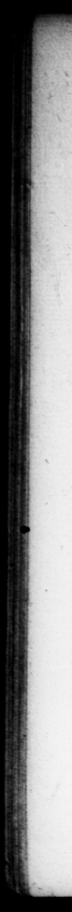
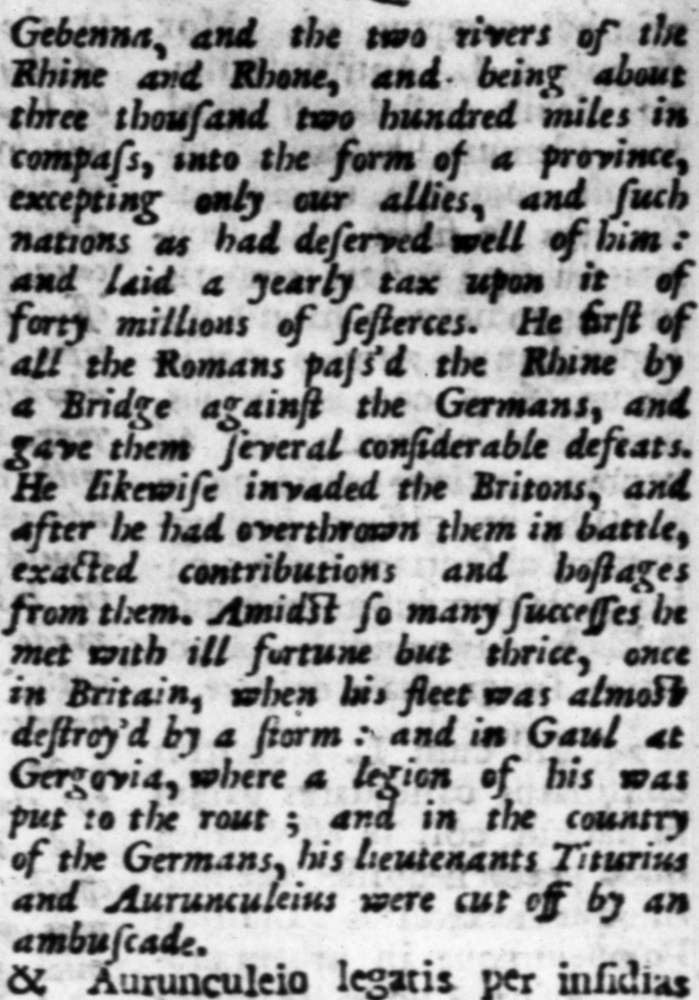

gu à ſaltu Pyrenzo Alpibuſ— monte Gebenna, fluminibus Rheno & Rhodano ontinetur, patetque circumitu ad bis & rricies centum milter ſbeias ac num inculunt, primus Roma» norum ponte fabricato agHalls, Ano aftecic clatbus. Aggreſſus eſt 1 rannos, ignutos antea, iu ratifq; pecunias & obindes — peravit. Per tut ſucceſlus ter, nec amplius, adverſum cafur expertus: in Britannia, claſſe vj tempeſtatĩs ab. Junta: & in Gallia, ad Gergoviam legion fuſa: & in Germanorum finibus, Titurio & cis. 26. Eodem temporis ſpat io matrem primo; Ceince filiam, nec muko polt neprem amlir, Inter qu contternata v. Cledii cave Rev. cum ſenatus unum cof. nominarimgne Cn, Pompeium fieri c—— egit cum tribunis | + ut abſenci dogne ingterii tems cexpleri copi 10 undi Contabtus — : ne e« cauſſa maturins, & impertetio achuc bello decederer. Od ut adeptus eſt, altna jam meditans, & ſpei ptens. nullum largi on, aut (ic iorum in quemquam genus 1ulilice pravatimgque omikfic. — E — znchcavit, cujus area ti ES. millies counititit. Fax. aud | Pupuin, epulnmgce pronuntiavic in fliz remoriam, gd ame cum nemo. Quoru u quam maxima <xipectagio eter, ca quæ al eum PRinerent, caarv:: mac. * — of in Britain, when lis fleet - and in Gaul «t ambuſcade. 26. thir time be off bis not ber firft, then bis daughter. aud ne lng after but grand dan bter. And in the mean while the goterUment being arme with the mrther of P. Cloaius, and the ſen te with an eye 10 Pompey, paſſing # wwe, that cnyy one cemul en for the mg, be re va lea with the tribes of the commens, who degw d ro join him with Pope”, te propeje a bil to rhe people, 20 bir» ts fand cancics:e jor à ſecen canjulſhip in Ei: abſence, when ihe teme bi: can fjheuld be war pen res % 225 = Hg ec 25 me — * 2 and wrivxely. H. I gun 8 new forum with money vi3 he war ; the grouwna1 of which ca bem above a hundred ifi of ſeftercer. He promiſed the gcple a publick en crranme „ gi tert. and @ feaft in wen arg of bus der bever aid rifers bis. cr, Nb 26 7115 urunculeio legatis per infidias” choſen for the year u DV * 12 S* K *. —_— v e 4 » 4 * n 7 "—& * 1 ge 2 5 WA r N 1 Mu 2 — ; : " FL Wa 3 * a * Ps * "& Þ k, q od 4 - 4 Op wer fo ies lb ab SS SAS on So 4 ConaR

